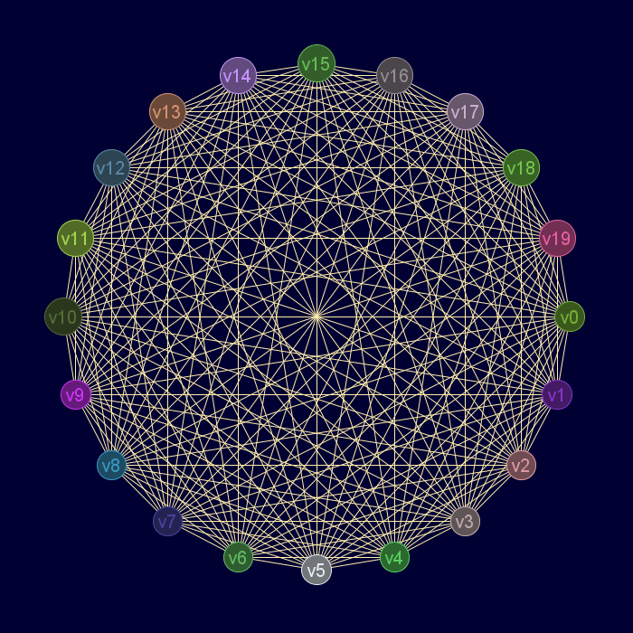
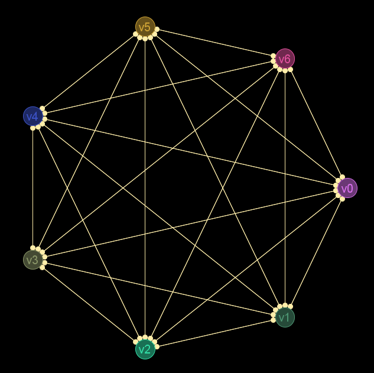

Descripción
Cadena de entrada
gr_completo
Cadena de salida
GRAFO.completo
Uso
gr_completo(<grafo>|<orden>)
Valor devuelto
Ejemplos
gr_completo(20)
Grafo en JMEScriptGUI con visor de grafos v0.1:

gr_completo(gr_completo(20))
Booleano: verdadero
K7 dirigido:gr_completo(7b)
Grafo en JMEScriptGUI con visor de grafos v0.1:

gr_completo(gr_completo(7b))
Booleano: verdadero
Véase también…
Desde / Última modificación
v0.6.2.0